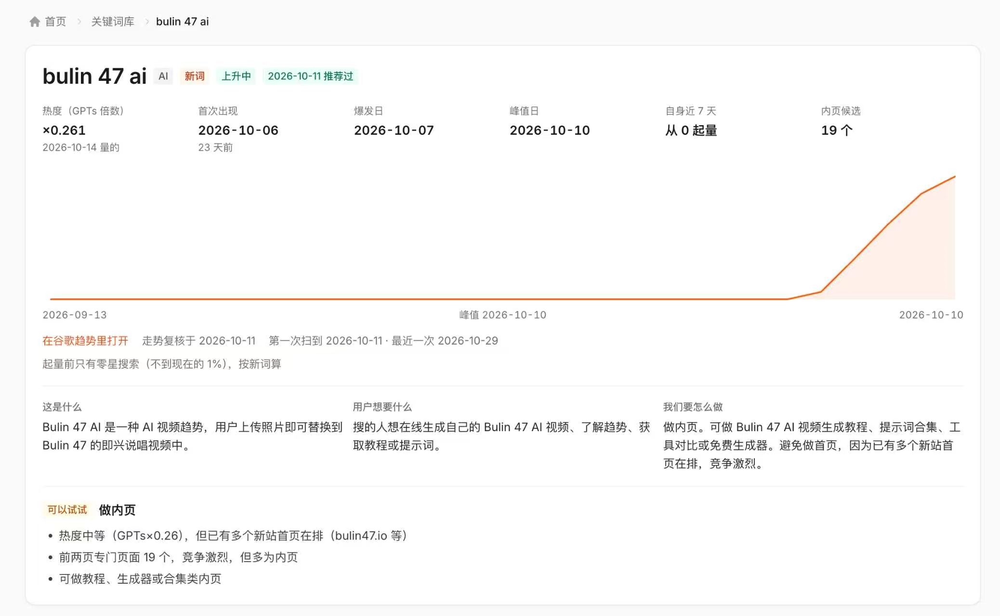

同一天里 Y. 问了哥飞两个连在一起的问题：新 AI 词该做成聚合站的一个内页，还是单独建站？错过爆发那一两周，还值得再入场吗？哥飞的回答很短：两个一起做 ；要不要做，看谷歌趋势的热度是不是还在掉 。
第一问：内页还是独立站
Y. 观察到 AI 工具站有两种形态：一是独立网站，二是大站把工具作为内页收进去。他倾向后者——新词先做一个内页，聚合到对应大类下（比如 AI 视频相关都归到大的 AI 视频站），等发现某个词趋势和热度确实很高，再单独建站。理由很实际：每个词都单独建站，除了挖需求、搜集内容，还要付出域名等成本；内页便宜得多。
哥飞的回答只有一句：「两个一起做，更好」。也就是说这不是二选一——内页负责用低成本接住长尾新词，独立站留给跑出来的高热度词，两条腿同时走。
第二问：错过爆发窗口还做不做
同一天下午，Y. 把问题推进了一层：词在爆发瞬间没抓住，过了一两周，还值得单独上站吗？他以「bulin 47」为例，看到很多独立站点已经排在很前面，担心现在入场没机会；同时也在权衡，是不是在聚合站里加一个内页就够，继续单独建站的成本和价值是否匹配。他还列了一串可能提高排名的做法：让用户免费使用一次、降低使用门槛、提供更多模板和更高级的模型、用价格竞争——同时怀疑，新站一上线会不会被谷歌排到很后面、这些优化还有没有意义。

哥飞的判断标准
哥飞没有讨论价格、免费额度或模型强度，只给了一条判断依据：看谷歌趋势的热度变化。
热度一直在下降：没必要做。 热度比较稳定，或者还在上升：当然要去做。 即使在下降，但相对量大：也可以做。 这条标准不区分内页还是独立站，先回答「做不做」，再决定用什么形态承接——形态的选择回到第一问的那句「两个一起做」。
群里的当场合验
哥飞回答后两分钟，Thor 补了一句：「bulin 47 ai 我这边看，好像是没量了」。这正是哥飞那条标准在具体词上的落点——如果趋势确实在掉，就不必再为一个已经过去的词单独投入站点。Y. 发的截图里，这个词的热度是 GPTs 倍数 ×0.261、前两页专门的页面已有 19 个，页面自身的建议也是做内页而不是抢首页。
原始对话
2026年10月29日 12:36 至 17:49，3 位参与者，共 7 条消息。当天两段提问按时间顺序合并；其中 1 张截图已补在正文对应位置，这里保留原始图片文件名。
聊天记录（7 条） 参与者 3 人：Y.、哥飞、Thor · 时间范围 2026年10月29日 12:36 至 2026年10月29日 17:49 · 原始 7 条，保留 7 条
Y Y. 2026年10月29日 12:36
各位老师，我有一个疑问。
Y Y. 2026年10月29日 17:38
@哥飞 哥飞老师，我现在有一个疑问：
Y Y. 2026年10月29日 17:38
[图片] 微信图片_202610291738_1.jpg
哥 哥飞 2026年10月29日 17:47
要看谷歌趋势热度变化，如果一直在下降，那没必要做了，但如果热度是比较稳定的，或者上升的，当然要去做